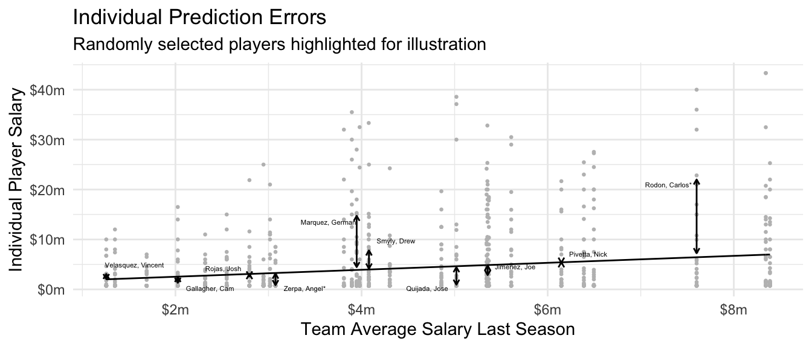

library(tidyverse)Data-Driven Estimator Selection
Topic for 2/2.
Here are slides.
Quantitative social scientists have long faced the question of how to choose a model. Even within the scope of linear regression, one might wonder whether a model that interacts two predictors is better than one that includes them only additively. As computational advances have yielded new algorithms for prediction, the number of choices has exploded. Many models are possible. How should we choose?
An algorithm for prediction takes as its input a feature vector \(\vec{x}\) and returns as its output a predicted value, \(\hat{y}\). One way to choose among several algorithms is to find the one that produces predictions \(\hat{y}\) that are as close as possible to the true outcomes \(y\). While this predictive metric might seem grounded in data science, this page will show how metrics of predictive performance can also help with a classical social science task: estimating subgroup means. By the end of the page, we will have motivated why one should care about metrics of predictive performance and learned tools to estimate predictive performance by sample splitting.
Predicting for individuals
Continuing with the example of baseball player salaries, we consider a model to predict salary this year as a linear function of team average salary from last year. We first prepare the environment and load data.
baseball <- read_csv("https://soc114.github.io/data/baseball_population.csv")Then we draw a sample of 5 players per team.
set.seed(90095)
learning <- baseball |>
group_by(team) |>
slice_sample(n = 5) |>
ungroup()We estimate a linear regression model on this sample.
linear_regression <- lm(
salary ~ team_past_salary,
data = learning
)The figure below visualizes the predictions from this linear regression, calculated for all players who were not part of the random learning sample.

While one might have hoped to tell a story about high-quality prediction, the dominant story in the individual-level prediction plot is one of poor prediction: players’ salaries vary widely around the estimated regression line. To put that fact to a number, one might consider \(R^2\) which involves a ratio of two expected squared prediction errors, one from the prediction function \(\hat{f}\) and one from a comparison model that predicts the mean for all cases.1
\[ R^2 = 1 - \frac{ \overbrace{ \text{E}\left[ \left( Y - \hat{f}(\vec{X}) \right)^2 \right] }^{\substack{\text{Expected Squared}\\\text{Prediction Error}}} } { \underbrace{ \text{E}\left[\left(Y - \text{E}(Y)\right)^2\right] }_\text{Variance of $Y$} } \] In other words, subtracting the predicted values from the individual players’ salaries only reduces the expected squared error by 5.8%. If the goal is to predict for individuals, the model does not seem very good!
Estimating subgroup means
A social scientist might respond that the goal was never to accurately predict the salary of any individual baseball player. Rather, the data on individual players was in service of a more aggregate goal: estimating the mean salary on each team. Noting that the prediction is the same for every player on a team, the social scientist might propose the graph below, in which the unit of analysis is a team instead of a player.

The social scientist might argue that the model is quite good for team salaries. If we take the goal to be to estimate the team average salary, then we might create an analogous version of \(R^2\) focused on estimation of team-average salaries.2
\[ R^2_\text{Group} = 1 - \frac{ \overbrace{ \text{E}\left[ \left( \text{E}(Y\mid\vec{X}) - \hat{f}(\vec{X}) \right)^2 \right] }^{\substack{\text{Expected Squared}\\\text{Estimation Error}}} } { \underbrace{ \text{E}\left[\left(\text{E}(Y\mid\vec{X}) - \text{E}(Y)\right)^2\right] }_\text{If Predicted $\text{E}(Y)$ for Everyone} } \] By that metric, the model seems quite good, predicting away 57.1% of the expected squared error at the team level. Surprisingly, a model that was not very good at predicting for individuals might be quite good at predicting the team-average outcomes!
One might respond that prediction and estimation are simply different goals, with little to do with one another. But in fact the two are mathematically linked. Given two models to choose from, the one that predicts better (in squared error loss) will also be a better estimator of the subgroup means.
Prediction and estimation are connected
To formalize the problem of choosing an estimator, suppose we have two prediction functions \(\hat{f}_1\) and \(\hat{f}_2\). Each function takes in a vector of features \(\vec{x}\) and returns a predicted value, \(\hat{f}_1(\vec{x})\) or \(\hat{f}_2(\vec{x})\). We will assume for simplicity that each function has already been learned on a simple random sample from our population, and that the remaining units available to us are those that were not used in the learning process.
Suppose we draw a random unit with features \(\vec{X}\) and outcome \(Y\). For this unit, algorithm one would have a squared prediction error \((Y - \hat{f}_1(\vec{X}))^2\). We might score each algorithm’s performance by the average squared prediction error, with the average taken across units.
\[ \underbrace{\text{ESPE}(\hat{f})}_{\substack{\text{Expected Squared}\\\text{Prediction Error}}} = \text{E}\left[\left(Y - \hat{f}(\vec{X})\right)^2\right] \] In our baseball example, the algorithm \(\hat{f}_1\) makes an error when Mookie Betts has a salary of 21.2m but the algorithm only predicts 7.0m. The expected squared prediction error is the squared difference between these two values, taken on average over all players.
Our social scientist has already replied that we rarely care about predicting the salary of an individual player. Instead, our questions are really about estimating subgroup means, such as the mean pay on each team. The social scientist might instead want to know about estimation error, \[ \underbrace{\text{ESEE}(\hat{f})}_{\substack{\text{Expected Squared}\\\text{Estimation Error}}} = \text{E}\left[\left(\text{E}(Y\mid\vec{X}) - \hat{f}(\vec{X})\right)^2\right] \] where \(\hat{f}(\vec{X})\) is the predicted salary of a player on team \(\vec{X}\) and \(\text{E}(Y\mid\vec{X})\) is the true population average salary on that team. This social scientist does not care about predicting for individual salaries \(Y\), but rather about accurately estimating the mean salary \(\text{E}(Y\mid\vec{X})\) in each team.
A little math (proof at the end of this section) can show that these two goals are actually closely linked. Expected squared prediction error equals expected squared estimation error plus expected within-group variance.
\[ \underbrace{\text{ESPE}(\hat{f})}_{\substack{\text{Expected Squared}\\\text{Prediction Error}}} = \underbrace{\text{ESEE}(\hat{f})}_{\substack{\text{Expected Squared}\\\text{Estimation Error}}} + \underbrace{\text{E}\left[\text{V}(Y\mid\vec{X})\right]}_{\substack{\text{Expected Within-}\\\text{Group Variance}}} \] Taking our baseball example, there are two sources of prediction error for Mookie Betts.
First, salaries vary among the Dodger players (\(\text{V}(Y\mid\vec{X} = \text{Dodgers})\)). Because Mookie Betts and Freddie Freeman are both players on the Dodgers, they are identical from the perspective of the model (they have identical \(\vec{X}\) values) and it has to make the same prediction for both of them. Just as there is variance within the Dodgers, there is variance within all MLB teams. The within-team variance averaged over teams (weighted by size) is the term at the right of the decomposition.
Second, the expected squared estimation error is the average squared difference between each player’s predicted salary and the true mean pay on that player’s team, \(\text{E}(Y\mid\vec{X})\). In the case of Mookie Betts, this is the difference between the prediction for Mookie Betts and the true mean salary on his team, the Dodgers. Estimation error corresponds to our error if our goal is to estimate the mean salary on each team, instead of predicting the salary for each individual.
Now suppose two prediction algorithms \(\hat{f}_1\) and \(\hat{f}_2\) have different performance. For example, maybe the first algorithm is a better predictor: \(\text{ESPE}(\hat{f}_1) < \text{ESPE}(\hat{f}_2)\). Regardless of which algorithm is used, the within-group variance component of the decomposition is unchanged. Therefore, if algorithm 1 is the better predictor, then it must also be the better estimator: \(\text{ESEE}(\hat{f}_1) < \text{ESEE}(\hat{f}_2)\).
In fact, suppose an algorithm was omniscient and managed to predict the true conditional mean function for every observation, \(\hat{f}_\text{Omniscient}(\vec{X}) = \text{E}(Y\mid\vec{X})\). Then estimation error would be zero for this function. Prediction error would equal the expected within-group variance. The best possible prediction function (with squared error loss) is the conditional mean. This is one intuitive reason why an algorithm with good predictive performance is also a good estimator.
These facts motivate an idea for choosing an estimation function: to estimate conditional means well, choose the algorithm that minimizes squared prediction error.
Appendix to section. A proof of the decomposition is provided below, but the ideas above are more important than the details of the proof.
\[ \begin{aligned} \text{ESPE}(\hat{f}) &= \text{E}\left[\left(Y - \hat{f}(\vec{X})\right)^2\right] \\ &\text{Add zero} \\ &= \text{E}\left[\left(Y - \text{E}(Y\mid\vec{X}) + \text{E}(Y\mid\vec{X}) - \hat{f}(\vec{X})\right)^2\right] \\ &= \underbrace{ \text{E}\left[\left(Y - \text{E}(Y\mid\vec{X})\right) ^ 2\right] }_{=\text{E}[\text{V}(Y\mid\vec{X})]} + \underbrace{ \text{E}\left[\left(\text{E}(Y\mid\vec{X}) - \hat{f}(\vec{X})\right) ^ 2\right] }_{=\text{ESEE}(\hat{f})} \\ &\qquad + \underbrace{ 2\text{E}\left[\left(Y - \text{E}(Y\mid\vec{X})\right)\left(\text{E}(Y\mid\vec{X}) - \hat{f}(\vec{X})\right)\right] }_{\substack{=\text{Cov}[Y - \text{E}(Y\mid\vec{X}), E(Y\mid\vec{X} - \hat{f}(\vec{X}))]=0\\\text{covariance of within-group error and estimation error,}\\\text{equals zero if the test case }Y\text{ is not used to learn }\hat{f}}} \\ &= \text{ESEE}(\hat{f}) + \text{E}\left[\text{V}(Y\mid\vec{X})\right] \end{aligned} \]
Why out-of-sample prediction matters
The connection between prediction and estimation opens a powerful bridge: we can find good estimators by exploring which algorithms predict well. But it is important to remember that this bridge exists only for out-of-sample prediction error: error when predictions are made on a new sample that did not include the initial predictions.
k-nearest neighbors estimator
To illustrate in-sample and out-of-sample prediction error, we consider a nearest neighbors estimator. When making a prediction for player \(i\), we might worry that we have too few sampled units on the team of player \(i\). We might solve this issue by averaging the sampled salaries within the team of player \(i\) and also the \(k\) nearest teams whose salaries in the past season were most similar.
For example, the Dodgers’ past-year average salary was $8.39m. The most similar team to them was the N.Y. Mets, who had an average salary of $8.34m. Because the past salaries are so similar, we might pool information: predict the Dodgers’ mean salary by the average of sampled players on both the Dodgers and the N.Y. Mets. If we wanted to pool more information, we might include the next-most similar team, the N.Y. Yankees with past salary $7.60m. We could pool more by also including the 3rd-nearest neighbor (Philadelphia, $6.50m), the 4th-nearest neighbor (San Diego, $6.39m), and so on. The more neighbors we include, the more pooled our estimate becomes.
In-sample performance
How many neighbors should we include? We first consider evaluating by in-sample performance: learn the estimator on a sample and evaluate predictive performance in that same sample. We repeatedly:
- draw a sample of 10 players per team
- apply the \(k\)-nearest neighbor estimator
- evaluate mean squared prediction error in that same sample
The blue line in the figure below shows results. In-sample mean squared prediction error is lowest when we pool over 0 neighbors. With in-sample evaluation, the predictions become gradually worse (higher mean squared error) as we pool information over more teams. If our goal were in-sample prediction, we should choose an estimator that does not pool information at all: the Dodgers’ population mean salary would be estimated by the mean among the sampled Dodgers only.

Out-of-sample performance
The red line in the figure above shows a different performance metric: out-of-sample performance. This line shows what happens when we repeatedly:
- draw a sample of 10 players per team
- apply the \(k\)-nearest neighbor estimator
- evaluate mean squared prediction error on all units not included in that sample
The red line of out-of-sample performance looks very different than the blue line of in-sample performance, in two ways.
First, the red line is always higher than the blue line. It is always harder to predict out-of-sample cases than to predict in-sample cases. This is unsurprising—the blue line was cheating by getting to see the outcomes of the very cases it was trying to predict!
Second, the red line exhibits a U-shaped relationship. Predictive performance improves (lower mean squared error) as we pool information over a few nearby teams. This is because the variance of the estimator is declining. After reaching an optimal value at around 10 neighbors, predictive performance begins to become worse (higher mean squared error).
One way to think about the red and blue lines is in terms of the signal and the noise. In any particular sample of 10 Dodger players, there is some amount of signal (true information about the Dodger population mean) and some amount of noise (randomness in the sample average arising from which 10 players we happened to sample). The distinction is irrelevant for in-sample prediction error, for which a close fit to both the signal and the noise yields low prediction error. But for out-of-sample prediction error, fitting to the signal improves performance while fitting to the noise harms performance. As one moves to the right in the graph, one is getting less of the signal and less of the noise. Thus, the blue line of in-sample performance gets consistently worse. The red line improves at first as the reduction in noise outweighs the reduction in signal, but then gets worse as the reduction in signal begins to outweigh the reduction in noise. In-sample prediction error is a poor metric because fitting closely to the noise can make this metric look misleadingly good. Out-of-sample error avoids this problem. The best value for nearest neighbors is the one that optimizes the tradeoff between signal and noise, where the red curve is minimized.
Another way to think about the lines is in terms of a bias-variance tradeoff. As we pool the Dodgers together with the N.Y. Mets and other teams, the variance of the estimator declines because the Dodger predicted salary is averaged over more teams. But the bias of the estimator increases: the N.Y. Mets are not the Dodgers, and including them in the average induces a bias. The minimum of the red curve is the amount of information pooling that optimizes the bias-variance tradeoff.
Sample splitting
The illustration above showed that we ideally evaluate an estimator learned in a sample by performance when making predictions for the rest of the population (excluding that sample). But in practice, we often have access only to the sample and not to the rest of the population. To learn out-of-sample predictive performance, we need sample splitting.
In its simplest version, sample splitting proceeds in three steps:
- Randomly partition sampled cases into
trainingandtestsets - Learn the prediction function among
trainingcases - Evaluate its performance among
testcases
Visually, we begin by randomly assigning cases into training or test sets.

Then we separate these into two datasets. We use the train set to learn the model and the test set to evaluate the performance of the learned model.

In code, we can carry out a train-test split by first loading the baseball population,
baseball_population <- read_csv("https://soc114.github.io/data/baseball_population.csv")and drawing a sample of 10 players per team.
baseball_sample <- baseball_population |>
group_by(team) |>
slice_sample(n = 10) |>
ungroup()We can then create the split. The code below first stratifies by team and then randomly samples 50% of cases to be used for the train set.
train <- baseball_sample |>
group_by(team) |>
slice_sample(prop = .5)The code below takes all remaining cases not used for training to be used as the test set.
test <- baseball_sample |>
anti_join(train, by = join_by(player))We can then learn a prediction function in the train set and evaluate performance in the test set. For example, the code below uses OLS.
ols <- lm(salary ~ team, data = train)
test_mse <- test |>
# Make predictions
mutate(yhat = predict(ols, newdata = test)) |>
# Calculate squared errors
mutate(squared_error = (salary - yhat) ^ 2) |>
# Summarize
summarize(mse = mean(squared_error))Tuning parameters by sample splitting
One way we might use sample splitting is for parameter tuning: to choose the value of some unknown tuning parameter such as the penalty \(\lambda\) in ridge regression.
library(glmnet)Loaded glmnet 4.1-10ridge_regression <- glmnet(
x = model.matrix(~team, data = train),
y = train |> pull(salary),
alpha = 0
)The glmnet package makes estimates at many values of the penalty parameter \(\lambda\). We can make predictions in the test set from models using these various values of \(\lambda\).
predicted <- predict(
ridge_regression,
newx = model.matrix(~team, data = test)
)We can extract the penalty parameter values with ridge_regression$lambda, organizing them in a tibble for ease of access.
lambda_tibble <- tibble(
lambda = ridge_regression$lambda,
lambda_index = colnames(predicted)
)For each \(\lambda\) value, the predictions are a column of predicted. The code below wrangles these predictions into a tidy format.
predicted_tibble <- as_tibble(predicted) |>
# Append the actual value of the test outcome
mutate(y = test |> pull(salary)) |>
pivot_longer(cols = -y, names_to = "lambda_index", values_to = "yhat") |>
left_join(lambda_tibble, by = join_by(lambda_index)) |>
mutate(squared_error = (y - yhat) ^ 2)At each \(\lambda\) value, we can calculate mean squared error in the test set.
mse <- predicted_tibble |>
group_by(lambda) |>
summarize(mse = mean(squared_error))The figure below visualizes these estimates. As the penalty parameter grows larger, predictive performance improves (lower error) to a point and then begins to get worse. The selected best value of the tuning parameter \(\lambda\) is highlighted in blue.
Warning: `label` cannot be a <ggplot2::element_blank> object.
Cross-validation
A downside of 50-50 sample splitting is that the train set is only half as large as the full available sample. We might prefer if it were larger, for instance 80% of the data used for training and only 20% used for testing. But then our estimates of performance in the test set might be noisy.
One solution to this problem is cross-validation, which proceeds in a series of steps:
- Randomize the sampled cases into a set of folds (e.g., 5 folds).
- Take fold 1 as the test set and estimate predictive performance.
- Take fold 2 as the test set and estimate predictive performance.
- Iterate until all folds have served as the test set
- Average predictive performance over the folds

Optionally, repeat for many repetitions of randomly assigning cases to folds to reduce stochastic error.
Cross-validation is so common that it is already packaged into some of the learning algorithms we have considered in class. For example, the code below carries out cross-validation to automatically select the penalty parameter for ridge regression.
ridge_regression_cv <- cv.glmnet(
x = model.matrix(~team, data = train),
y = train |> pull(salary),
alpha = 0
)We can use ridge_regression_cv$lambda.min to extract the chosen value of \(\lambda\) that minimizes cross-validated mean squared error (2.7074931^{7}). We can also visualize the performance with a plot() function.
plot(ridge_regression_cv)
We can make predictions at the chosen value of \(\lambda\) by specifying the s argument in the predict() function.
predicted <- test |>
mutate(
yhat = predict(
ridge_regression_cv,
s = "lambda.min",
newx = model.matrix(~team, data = test)
)[,1]
)Choosing an algorithm by sample splitting
In the example above, we used sample splitting to choose the optimal value of a penalty parameter (\(\lambda\)) within a particular algorithm for prediction (ridge regression). One can also use a train-test split to choose among many very different estimators. For example, we might estimate OLS, a tree, and a forest.
library(rpart)
library(grf)ols <- lm(salary ~ team_past_salary, data = train)
tree <- rpart(salary ~ team_past_salary, data = train)
forest <- regression_forest(
X = model.matrix(~team_past_salary, data = train),
Y = train |> pull(salary)
)We can make predictions for all of these estimators in the test set.
predicted <- test |>
mutate(
yhat_ols = predict(ols, newdata = test),
yhat_tree = predict(tree, newdata = test),
yhat_forest = predict(forest, newdata = model.matrix(~team_past_salary, data = test))$predictions
) |>
pivot_longer(
cols = starts_with("yhat"), names_to = "estimator", values_to = "yhat"
)The figure below visualizes the predicted values.

We can calculate mean squared error in the test set for each algorithm to determine which one is producing the best predictions.
mse <- predicted |>
group_by(estimator) |>
mutate(squared_error = (salary - yhat) ^ 2) |>
summarize(mse = mean(squared_error))Warning: `label` cannot be a <ggplot2::element_blank> object.
Footnotes
When estimating \(R^2\), we often use the training sample mean as an estimator of \(\text{E}(Y)\) for the denominator, similar to how the training sample is used to learn \(\hat{f}\).↩︎
When estimating \(R^2_\text{Group}\), we often use the subgroup training sample mean as an estimator of \(\text{E}(Y\mid\vec{X})\) for the denominator, similar to how the training sample is used to learn \(\hat{f}\).↩︎